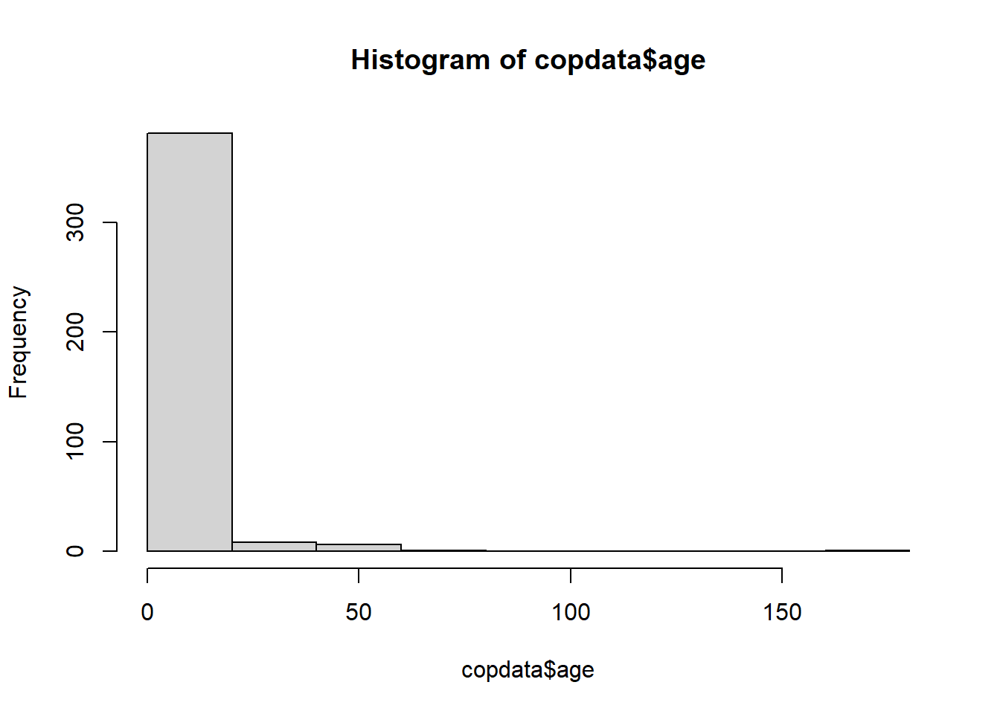

At the end of the session, participants will be able to:
Import datasets in R
Apply basic data management techniques to explore and familiarise themselves with the dataset
Apply strategies for data cleaning
2. Story/plot description
You and your team have carried out hundreds of interviews in a very short time. Well done!
You will now have your first look at the data. Note that in real life you would have ideally done a pilot of the questionnaire and you would have prepared in advance a codebook and be familiar with the names and format of all variables.
Explore and clean the data you have collected and save a new version of the cleaned dataset in your computer. Be sure to make use of the R code that was provided to you previously, during the R practicals. You can also use the code you wrote during the Applied Epi course. You are expected to look at the help functions and google as well. Try to understand what the functions are doing and what their arguments are.
Work on your own computer and help your fellow colleagues as needed. The lead of the outbreak will be in charge of keeping the time (unless you designate another person, but be sure that someone keeps track of time).
Open R Studio and set up a new R project, and create a data and a scripts folder.
3. Tips you could follow
3.1. Install packages and load libraries
Load the R packages you will be using. Update this list of packages as you dig into the code: You may realise you need packages you didn’t think about at the beginning. Remember that it is a good practice to load tydiverse at the end of your package list, to avoid masking functions.
Show the code
# Check if the 'pacman' package is installed, if not install it:if (!requireNamespace("pacman", quietly =TRUE)) install.packages("pacman")# Load the required libraries into the current R session:pacman::p_load(rio, here, skimr, plyr, janitor, lubridate, gtsummary, flextable, officer, epikit, apyramid, scales, tidyverse )
3.2. Import your data
You can find the spetses_school.csv file in EVA. Feel free to explore the codebook as well.
Show the code
# Import the raw data set:copdata <-import(here::here("data", "spetses_school.csv"))
3.3. Explore and clean your data
Have a look at the structure of your data. Here you have some questions that may help you get started:
How many observations and variables does the dataset contain?
What types of variables do you have and what types of values are recorded?
Do any of the values of the other variables look implausible? Which ones and why? What will you do about it?
Go ahead and clean your data as you see fit.
Need a little bit of help?
You could use head(), dim(), str(), or skim() to have a quick look at the data and get an idea of which variables you want to explore further. You can also do some tables
Show the code
head(copdata)
Show the code
dim(copdata)
[1] 397 41
Show the code
str(copdata)
'data.frame': 397 obs. of 41 variables:
$ id : chr "sp-2-001" "sp-3-003" "sp-1-005" "sp-2-006" ...
$ sex : chr "male" "female" "female" "male" ...
$ age : int 18 18 17 17 18 180 16 15 43 16 ...
$ group : int 1 1 1 1 1 1 0 1 0 1 ...
$ class : int 2 3 1 2 3 2 NA 1 NA 1 ...
$ ill : int 1 0 1 0 1 1 0 1 1 0 ...
$ diarrhoea : int 1 NA NA NA 1 1 NA 0 1 NA ...
$ bloody : int 0 NA NA NA 0 0 NA 0 NA NA ...
$ vomiting : int 0 NA NA NA 0 0 NA 0 NA NA ...
$ abdo : int 1 NA 1 NA 1 1 NA 0 NA NA ...
$ nausea : int 0 NA 1 NA 1 0 NA 1 1 NA ...
$ fever : int NA NA NA NA 0 0 NA 0 NA NA ...
$ headache : int 0 NA 1 NA 1 0 NA 1 1 NA ...
$ jointpain : int 0 NA NA NA 0 0 NA 0 1 NA ...
$ starthour : int 9 NA NA NA 15 15 NA NA 3 NA ...
$ meal : int 1 1 1 0 1 1 1 1 1 1 ...
$ feta : int 1 0 NA 0 1 1 1 1 1 1 ...
$ fetaD : int 2 0 NA 0 2 2 2 1 2 2 ...
$ sardines : int 1 0 NA 0 1 1 1 0 1 1 ...
$ sardinesD : int 2 0 NA 0 2 2 2 0 2 2 ...
$ eggplant : int 0 0 NA 0 1 1 1 0 NA 1 ...
$ eggplantD : int 0 0 NA 0 2 2 2 0 NA 2 ...
$ veal : int 1 1 1 1 1 1 1 1 1 1 ...
$ vealD : int 2 1 0 0 2 2 1 3 2 2 ...
$ pasta : int 1 1 1 0 1 1 1 1 1 1 ...
$ pastaD : int 3 3 1 0 2 2 2 3 2 3 ...
$ tomsal : int 1 1 NA 0 1 1 1 1 1 1 ...
$ tomsalD : int 1 3 NA 0 2 2 2 2 2 2 ...
$ bread : int 1 1 1 0 1 1 1 1 1 1 ...
$ breadD : int 2 3 1 0 2 2 2 2 2 2 ...
$ dessert : int 1 1 NA 0 1 1 0 1 NA NA ...
$ dessertD : int 2 3 NA 0 2 2 0 1 NA NA ...
$ champagne : int 1 1 0 1 1 1 1 1 1 1 ...
$ champagneD: int 1 1 0 3 1 1 2 1 1 1 ...
$ beer : int 1 0 0 1 1 1 NA 1 NA 1 ...
$ beerD : int 3 0 0 3 2 3 NA 1 NA 2 ...
$ redwine : int 0 1 0 1 0 0 1 0 1 0 ...
$ redwineD : int 0 3 0 3 0 0 2 0 2 0 ...
$ whitewine : int 0 0 0 1 1 1 1 1 NA 0 ...
$ whitewineD: int 0 0 0 3 3 2 1 3 NA 0 ...
$ dayonset : chr "6oct2024" "" "" "" ...
Let’s explore and manage some variables in detail.
Age
Through visual exploration of the age histogram we see that there is at least one very high value, likely implausible. You can then create a cross-tabulation of variables age and group to have a better idea of how your data looks like.
Show the code
# Have a look at the histogram hist(copdata$age)

Show the code
# Create cross-tab with the group variable: tabyl(dat = copdata, var1 = age, var2 = group)
Note that group is coded as 0 and 1, and these may be difficult to interpret when they mean something other than “no” and “yes”, respectively. From the codebook, you know that teachers are represented by 0, and students by 1. Let’s change this to make our lives easier:
Show the code
# Convert group to a factor and label 0 as teacher, 1 as student:copdata <- copdata %>%mutate(group =factor(group, labels =c("teacher", "student")))
Now, have a look at your cross-tab again:
Show the code
tabyl(dat = copdata, var1 = age, var2 = group)
With this table, we can more easily identify ages that are likely to be typographic errors. Specifically:
There is one teacher aged 16 (likely digit reversal - should be 61)
There is one student aged 8 (likely missing a digit - should be 18)
There is one student aged 180 (likely has an extra digit - should be 18)
Assuming you have contacted the school to make sure your suspicions about the actual ages are correct, we can now correct them, using case_when(). We create logical conditions to identify the incorrect ages, combining the values for age with the group they belong to:
Show the code
# Update incorrect ages to the correct values with case_when: copdata <- copdata %>%mutate(age =case_when( # Where respondent is 16 and a teacher, change age to 61: age ==16& group =="teacher"~61, # where respondent is 8 or 180 and a student, change age to 18: age ==8& group =="student"~18, age ==180& group =="student"~18, # Keep remaining values as is: .default =as.numeric(age) # if .default is not working, try:# TRUE ~ age ) )
Create summary table for the dose response columns (those finishing with a capital “D”) to have a look at their distribution.
Need a little bit of help?
Use gtsummary::tbl_summary().
Show the code
#| label: check_dose_cols#| tbl-cap: no caption# Create summary table for dose response columns: drtable <- copdata %>%# Select all the columns with column names that end in upper case 'D': select(ends_with("D", ignore.case =FALSE)) %>%# Create the summary table, excluding missing values: tbl_summary(missing ="no") # Print the summary table: drtable
Characteristic
N = 3971
fetaD
0
110 (29%)
1
78 (20%)
2
155 (41%)
3
38 (10.0%)
sardinesD
0
125 (33%)
1
35 (9.2%)
2
184 (48%)
3
36 (9.5%)
eggplantD
0
151 (41%)
1
41 (11%)
2
147 (40%)
3
28 (7.6%)
vealD
0
42 (11%)
1
70 (18%)
2
184 (48%)
3
87 (23%)
pastaD
0
44 (12%)
1
70 (18%)
2
183 (48%)
3
85 (22%)
tomsalD
0
162 (43%)
1
52 (14%)
2
126 (34%)
3
33 (8.8%)
breadD
0
35 (9.2%)
1
51 (13%)
2
267 (70%)
3
26 (6.9%)
dessertD
0
206 (58%)
1
33 (9.3%)
2
87 (25%)
3
29 (8.2%)
champagneD
0
49 (13%)
1
208 (56%)
2
45 (12%)
3
70 (19%)
beerD
0
81 (22%)
1
41 (11%)
2
57 (16%)
3
183 (51%)
redwineD
0
266 (77%)
1
31 (9.0%)
2
21 (6.1%)
3
27 (7.8%)
whitewineD
0
100 (28%)
1
73 (20%)
2
67 (19%)
3
121 (34%)
1 n (%)
3.4. Modify variables format
There are some “column types” you would like to modify because either R needs some specific types of data when working with certain variables, or because it will be easier for you to visualise and interpret the data. For example, the variable “group” is encoded as 0 and 1, when you create a table later on, you don’t want to see 0’s and 1’s because that doesn’t mean anything. It is better to change this variable to a factor, with explicit labels, so they actually mean something when they come out in your table.
You can use mutate to modify the type of the following variables:
Table 1: Variable types to modify
Variable name
Original
Desired
Hint
sex
character
factor
mutate(), as.factor()
class
integer
factor
mutate(), as.factor()
ill
integer
factor
mutate(), as.factor()
All the clinical symptom variables
integer
factor
mutate(across()), as.factor()
All the food variables representing the amount of specific foods eaten (those finishing with a capital “D”)
integer
factor
mutate(across()), as.factor()
dayonset
character
date
lubridate::dmy()
starthour and dayonset together
integer (starthour)
date (dayonset)
POSIXct, POSIXt
lubridate::ymd_h() could have inside stringr::str_glue() with dayonset and starthour
Sex, class and ill
Let’s start transforming one-by-one the first three variables in the table: sex, class and ill.
For these variables, we are going to show you a couple of different ways to carry out the same variable type transformation in a set of variables, so you don’t need to do one variable at a time. We are showing you these ways so you see alternative ways to do the same thing.
For the variables that are clinical symptoms, we will list them one by one and show you the use of mutate(across( )).
For the variables that are food doses, we will show you how to first create a vector of names, following by using mutate(across(all_of( ))) on this vector.
Show the code
# Create a vector with all the food variables representing the amount of specific foods items eaten (those finishing with a capital "D")# One way of doing it:food_dose <- copdata %>%select(ends_with("D", ignore.case =FALSE)) %>%names()# Another way of doing it:# food_dose <- c("fetaD", "sardinesD", "eggplantD", "pastaD", # "vealD", "greeksalD", "dessertD", "breadD", # "champagneD", "beerD", "redwineD", "whitewineD")copdata <- copdata %>%mutate(# food dose variablesacross(.cols =all_of(food_dose), .fns =~as.factor(.)))
Note
The tilde (~) above is used to apply the transformation as.factor(.) to each selected column, which in our case is either all columns included in food_items and food_dose.
Date and time variables
Let’s stop and… think!
Why may you want to transform the variable starthour to date-time?
You can use lubridate::dmy() to mutate the dayonset variable into a date variable. Note that we are using the function dmy() because dates are formatted as day, then month (abbreviated character string), then year (i.e. “12nov2006”).
Show the code
# Have a look at how the data is storedhead(copdata$dayonset)
[1] "6oct2024" "" "" "" "6oct2024" "7oct2024"
Show the code
class(copdata$dayonset)
[1] "character"
Show the code
# Update copdata:copdata <- copdata %>%# Change column to date class:mutate(dayonset = lubridate::dmy(dayonset))# Check class of updated column:class(copdata$dayonset)
[1] "Date"
Show the code
# Have a look at your data now:head(copdata$dayonset)
[1] "2024-10-06" NA NA NA "2024-10-06"
[6] "2024-10-07"
Having a variable that defines “time” in an outbreak investigation can be very useful when creating a case definition. An hour of the day, without a date associated with it doesn’t help you much, thus, you should merge together day and time of onset of symptoms into a single variable. Moreover, you will be using this combined variable later on to estimate an incubation period and create your epicurve. We can combine these two variables by using the lubridate::ymd_h() function.
Before we proceed, it would be wise to check if any respondents have a value for dayonset but not starthour, or vice versa. The lubridate date-time conversion functions do not have an explicit argument for dealing with missing values, but the truncated = … argument can help prevent spurious date-times being derived from a date-time combination where one value is missing.
We can check if we have any missing values by cross-tabulating starthour with dayonset:
This shows us that there are two respondents who had an onset date, but are missing onset time (starthour). Since starthour is represented by 1 - 2 digits, we can specify that we want lubridate to also parse date-time combinations that are truncated by up to two digits:
Show the code
copdata <- copdata %>%# Combine dayonset and starthour in a new date time variable:mutate(onset_datetime =ymd_h(str_glue("{dayonset}, {starthour}"), # Deal with missing starthour:truncated =2))
Warning: There was 1 warning in `mutate()`.
ℹ In argument: `onset_datetime = ymd_h(str_glue("{dayonset}, {starthour}"),
truncated = 2)`.
Caused by warning:
! 175 failed to parse.
Note that we needed to use str_glue() to concatenate dayonset and starthour together before we could convert the variable to a date-time object. This is because the ymd_h() function expects a single character string, containing both the date and the time, as input.
The argument truncated = 2 will result in dates with missing starthour still being converted to date-time, with the missing time being set to 00:00 (midnight). Whether you want to deal with missing starthour in this way or prefer to code these date-times as NA will depend on how you want them to be represented in your analysis.
Now we can check that everything in the new combined date-time variable has parsed correctly:
Show the code
head(copdata$dayonset)
[1] "2024-10-06" NA NA NA "2024-10-06"
[6] "2024-10-07"
Show the code
head(copdata$starthour)
[1] 9 NA NA NA 15 15
Show the code
head(copdata$onset_datetime)
[1] "2024-10-06 09:00:00 UTC" NA
[3] NA NA
[5] "2024-10-06 15:00:00 UTC" "2024-10-07 15:00:00 UTC"
3.5. Export clean data
Save the cleaned data set before proceeding with using your case definition to identify cases in your dataset. Use the .rds format, as it preserves column classes. This ensures you will have only minimal cleaning to do after importing the data into R at the next inject.
Save your clean data as a new file “Spetses_clean1_YOURINITIALS.rds”, under the data folder of your Rproject.
---title: "Data import and cleaning"editor: visualeditor_options: chunk_output_type: console---# **1. Learning outcomes**At the end of the session, participants will be able to:- Import datasets in R- Apply basic data management techniques to explore and familiarise themselves with the dataset- Apply strategies for data cleaning# **2. Story/plot description**You and your team have carried out hundreds of interviews in a very short time. Well done!You will now have your first look at the data. Note that in real life you would have ideally done a pilot of the questionnaire and you would have prepared in advance a codebook and be familiar with the names and format of all variables.Explore and clean the data you have collected and save a new version of the cleaned dataset in your computer. Be sure to make use of the R code that was provided to you previously, during the R practicals. You can also use the code you wrote during the Applied Epi course. You are expected to look at the help functions and google as well. Try to understand what the functions are doing and what their arguments are.Work on your own computer and help your fellow colleagues as needed. The lead of the outbreak will be in charge of keeping the time (unless you designate another person, but be sure that someone keeps track of time).Open R Studio and set up a new R project, and create a `data` and a scripts `folder`.# **3. Tips you could follow**## 3.1. Install packages and load libraries- Load the R packages you will be using. Update this list of packages as you dig into the code: You may realise you need packages you didn't think about at the beginning. Remember that it is a good practice to load tydiverse at the end of your package list, to avoid [masking functions](https://www.ucl.ac.uk/~uctqiax/PUBLG100/2015/faq/masking.html).```{r, Packages}# Check if the 'pacman' package is installed, if not install it:if (!requireNamespace("pacman", quietly = TRUE)) install.packages("pacman")# Load the required libraries into the current R session:pacman::p_load(rio, here, skimr, plyr, janitor, lubridate, gtsummary, flextable, officer, epikit, apyramid, scales, tidyverse )```## 3.2. Import your data- You can find the `spetses_school.csv` file in EVA. Feel free to explore the **codebook** as well.```{r, Import_data}# Import the raw data set:copdata <- import(here::here("data", "spetses_school.csv"))```## 3.3. Explore and clean your data- Have a look at the structure of your data. Here you have some questions that may help you get started: - How many observations and variables does the dataset contain? - What types of variables do you have and what types of values are recorded? - Do any of the values of the other variables look implausible? Which ones and why? What will you do about it?- Go ahead and clean your data as you see fit.::: {.callout-tip title="Need a little bit of help?" collapse="true"}You could use `head()`, `dim()`, `str()`, or `skim()` to have a quick look at the data and get an idea of which variables you want to explore further. You can also do some tables:::```{r, Explore_data}head(copdata)dim(copdata)str(copdata)skim(copdata)names(copdata)```Let's explore and manage some variables in detail.#### AgeThrough visual exploration of the `age` histogram we see that there is at least one very high value, likely implausible. You can then create a cross-tabulation of variables age and group to have a better idea of how your data looks like.```{r age_exploration}# Have a look at the histogram hist(copdata$age) # Create cross-tab with the group variable: tabyl(dat = copdata, var1 = age, var2 = group)```Note that `group` is coded as 0 and 1, and these may be difficult to interpret when they mean something other than "no" and "yes", respectively. From the codebook, you know that teachers are represented by 0, and students by 1. Let's change this to make our lives easier:```{r recode_group}# Convert group to a factor and label 0 as teacher, 1 as student:copdata <- copdata %>% mutate(group = factor(group, labels = c("teacher", "student")))```Now, have a look at your cross-tab again:```{r cross-tab_age_group}tabyl(dat = copdata, var1 = age, var2 = group) ```With this table, we can more easily identify ages that are likely to be typographic errors. Specifically:- There is one teacher aged 16 (likely digit reversal - should be 61)- There is one student aged 8 (likely missing a digit - should be 18)- There is one student aged 180 (likely has an extra digit - should be 18)Assuming you have contacted the school to make sure your suspicions about the actual ages are correct, we can now correct them, using `case_when()`. We create logical conditions to identify the incorrect ages, combining the values for age with the group they belong to:```{r age_cleaning}# Update incorrect ages to the correct values with case_when: copdata <- copdata %>% mutate(age = case_when( # Where respondent is 16 and a teacher, change age to 61: age == 16 & group == "teacher" ~ 61, # where respondent is 8 or 180 and a student, change age to 18: age == 8 & group == "student" ~ 18, age == 180 & group == "student" ~ 18, # Keep remaining values as is: .default = as.numeric(age) # if .default is not working, try: # TRUE ~ age ) ) ```{fig-alt="Cartoon showing a table with creature type (kraken, dragon, or cyclops) and age (baby, teen, or adult). The three creatures listed are adding a new column named “danger”, which contains the word “extreme!” if the type is “kraken”, or “high” for any other type. Stylized text reads “dplyr::case_when() - IF ELSE...but you love it? An example of code is shown: mutate(danger = case_when(type == “kraken” ~ “extreme!”, TRUE ~ “high”). Learn more about case_when." width="80%" fig-align="center"}- Create summary table for the dose response columns (those finishing with a capital "D") to have a look at their distribution.::: {.callout-tip title="Need a little bit of help?" collapse="true"}Use `gtsummary::tbl_summary()`.:::```{r }#| label: check_dose_cols#| tbl-cap: no caption# Create summary table for dose response columns: drtable <- copdata %>% # Select all the columns with column names that end in upper case 'D': select(ends_with("D", ignore.case = FALSE)) %>% # Create the summary table, excluding missing values: tbl_summary(missing = "no") # Print the summary table: drtable```## 3.4. Modify variables formatThere are some "column types" you would like to modify because either R needs some specific types of data when working with certain variables, or because it will be easier for you to visualise and interpret the data. For example, the variable "group" is encoded as 0 and 1, when you create a table later on, you don't want to see 0's and 1's because that doesn't mean anything. It is better to change this variable to a factor, with explicit labels, so they actually mean something when they come out in your table.{fig-alt="Cartoon of cute fuzzy monsters dressed up as different X-men characters, working together to add a new column to an existing data frame. Stylized title text reads “dplyr::mutate - add columns, keep existing.” Learn more about dplyr::mutate." width="50%" fig-align="center"}You can use `mutate` to modify the type of the following variables:+-------------------------------------------------------------------------------------------------------------+---------------------+-----------------+--------------------------------------------------------------------------------------+| Variable name | Original | Desired | Hint |+=============================================================================================================+=====================+=================+======================================================================================+| sex | character | factor | mutate(), as.factor() |+-------------------------------------------------------------------------------------------------------------+---------------------+-----------------+--------------------------------------------------------------------------------------+| class | integer | factor | mutate(), as.factor() |+-------------------------------------------------------------------------------------------------------------+---------------------+-----------------+--------------------------------------------------------------------------------------+| ill | integer | factor | mutate(), as.factor() |+-------------------------------------------------------------------------------------------------------------+---------------------+-----------------+--------------------------------------------------------------------------------------+| All the clinical symptom variables | integer | factor | mutate(across()), as.factor() |+-------------------------------------------------------------------------------------------------------------+---------------------+-----------------+--------------------------------------------------------------------------------------+| All the food variables representing the amount of specific foods eaten (those finishing with a capital "D") | integer | factor | mutate(across()), as.factor() |+-------------------------------------------------------------------------------------------------------------+---------------------+-----------------+--------------------------------------------------------------------------------------+| dayonset | character | date | lubridate::dmy() |+-------------------------------------------------------------------------------------------------------------+---------------------+-----------------+--------------------------------------------------------------------------------------+| starthour and dayonset together | integer (starthour) | POSIXct, POSIXt | lubridate::ymd_h() could have inside stringr::str_glue() with dayonset and starthour || | | | || | date (dayonset) | | |+-------------------------------------------------------------------------------------------------------------+---------------------+-----------------+--------------------------------------------------------------------------------------+: Table 1: Variable types to modify#### Sex, class and illLet's start transforming one-by-one the first three variables in the table: `sex`, `class` and `ill`.```{r, mutate_simple}copdata <- copdata %>% mutate( sex = as.factor(sex), class = as.factor(class), ill = as.factor(ill))```#### Symptoms and Food variablesFor these variables, we are going to show you a couple of different ways to carry out the same variable type transformation in a *set* of variables, so you don't need to do one variable at a time. We are showing you these ways so you see alternative ways to do the same thing.1. For the variables that are clinical symptoms, we will list them one by one and show you the use of `mutate(across( ))`.```{r, mutate_cs}copdata <- copdata %>% mutate( # clinical symptoms across(.cols = c(diarrhoea, bloody, vomiting, abdo, nausea, fever,headache, jointpain), .fns = ~ as.factor(.) ) )```2. For the variables that are food doses, we will show you how to first create a vector of names, following by using `mutate(across(all_of( )))` on this vector.```{r, mutate_food}# Create a vector with all the food variables representing the amount of specific foods items eaten (those finishing with a capital "D")# One way of doing it:food_dose <- copdata %>% select( ends_with("D", ignore.case = FALSE)) %>% names()# Another way of doing it:# food_dose <- c("fetaD", "sardinesD", "eggplantD", "pastaD", # "vealD", "greeksalD", "dessertD", "breadD", # "champagneD", "beerD", "redwineD", "whitewineD")copdata <- copdata %>% mutate( # food dose variables across(.cols = all_of(food_dose), .fns = ~as.factor(.))) ```::: {.callout-note title="Note" collapse="true"}The tilde (`~`) above is used to apply the transformation `as.factor(.)` to each selected column, which in our case is either all columns included in `food_items` and `food_dose.`:::#### Date and time variables::: {.callout-warning title="Let's stop and... think!" collapse="true"}Why may you want to transform the variable starthour to date-time?:::{fig-alt="Fuzzy cartoon monsters in construction hats sorting a pile of “Y” “M” and “D”s into separate piles labeled “Years”, “Months” and “Days”. Title text reads “Lubridate: wrangle times and dates!” Learn more about date-time wrangling with lubridate." width="50%" fig-align="center"}You can use `lubridate::dmy()` to mutate the `dayonset` variable into a date variable. Note that we are using the function `dmy()` because dates are formatted as day, then month (abbreviated character string), then year (i.e. "12nov2006").```{r correct_date_format}# Have a look at how the data is storedhead(copdata$dayonset)class(copdata$dayonset)# Update copdata:copdata <- copdata %>% # Change column to date class: mutate( dayonset = lubridate::dmy(dayonset))# Check class of updated column:class(copdata$dayonset)# Have a look at your data now:head(copdata$dayonset)```Having a variable that defines "time" in an outbreak investigation can be very useful when creating a case definition. An hour of the day, without a date associated with it doesn't help you much, thus, you should merge together day and time of onset of symptoms into a single variable. Moreover, you will be using this combined variable later on to estimate an incubation period and create your epicurve. We can combine these two variables by using the `lubridate::ymd_h()` function.Before we proceed, it would be wise to check if any respondents have a value for `dayonset` but not `starthour`, or vice versa. The `lubridate` date-time conversion functions do not have an explicit argument for dealing with missing values, but the `truncated = …` argument can help prevent spurious date-times being derived from a date-time combination where one value is missing.We can check if we have any missing values by cross-tabulating `starthour` with `dayonset`:```{r crosstab_dayonset_starthour}# Cross-tabulate dayonset with starthour:tabyl(dat = copdata, var1 = starthour, var2 = dayonset)```This shows us that there are two respondents who had an onset date, but are missing onset time (`starthour`). Since `starthour` is represented by 1 - 2 digits, we can specify that we want `lubridate` to also parse date-time combinations that are truncated by up to two digits:```{r combine_date_time}copdata <- copdata %>% # Combine dayonset and starthour in a new date time variable: mutate(onset_datetime = ymd_h( str_glue("{dayonset}, {starthour}"), # Deal with missing starthour: truncated = 2))```Note that we needed to use `str_glue()` to concatenate `dayonset` and `starthour` together before we could convert the variable to a date-time object. This is because the `ymd_h()` function expects a single character string, containing both the date and the time, as input.The argument `truncated = 2` will result in dates with missing `starthour` still being converted to date-time, with the missing time being set to `00:00` (midnight). Whether you want to deal with missing `starthour` in this way or prefer to code these date-times as `NA` will depend on how you want them to be represented in your analysis.Now we can check that everything in the new combined date-time variable has parsed correctly:```{r check_onset_datetime}head(copdata$dayonset)head(copdata$starthour)head(copdata$onset_datetime)```## 3.5. Export clean dataSave the cleaned data set before proceeding with using your case definition to identify cases in your dataset. Use the .rds format, as it preserves column classes. This ensures you will have only minimal cleaning to do after importing the data into R at the next inject.Save your clean data as a new file "Spetses_clean1_YOURINITIALS.rds", under the data folder of your Rproject.::: {.callout-tip title="Need a little bit of help?" collapse="true"}Use `rio::export()`.:::```{r export_clean_data}export(x = copdata, file = here::here("data", "Spetses_clean1_2024.rds"))```{width="80%" fig-align="center"}